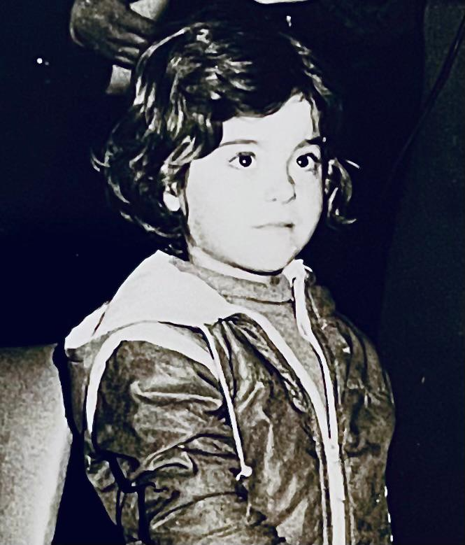
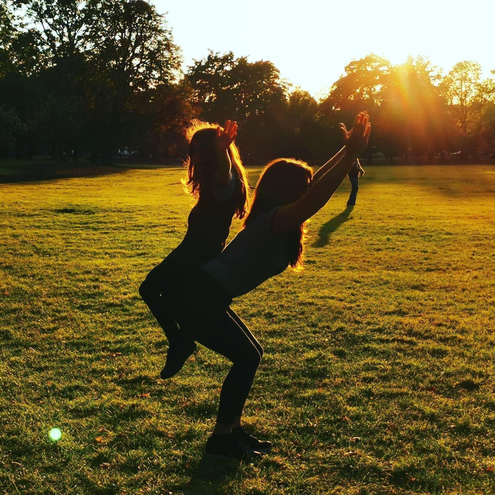
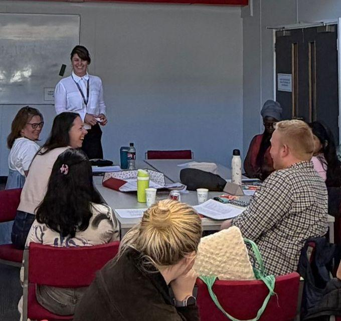

Meet CigdemÇiğdem ile Tanışın
As a child, I was an incurable dreamer and a bit of a rebel. To escape the heavy realities of daily life, I would sneak up to our roof in Istanbul to dance, sing, and give grand speeches to imaginary crowds. Downstairs, I filled the house with traditional folk songs (türküler), creating a safe, creative, and fiercely independent inner world. That rooftop was my first stage—it taught me how to stand firmly on my own feet, take bold steps, and laugh freely. Çocukken tedavisi mümkün olmayan bir hayalperest ve biraz da asiydim. Günlük hayatın ağır gerçekliklerinden kaçmak için İstanbul'daki çatımıza gizlice çıkar, dans eder, şarkı söyler ve hayali kalabalıklara görkemli konuşmalar yapardım. Aşağıda ise evi geleneksel türkülerle doldurur, güvenli, yaratıcı ve inatla bağımsız bir iç dünya yaratırdım. O çatı benim ilk sahnemdi—bana kendi ayaklarım üzerinde sağlam durmayı, cesur adımlar atmayı ve özgürce gülmeyi öğretti.
Where the Story BeginsHikayenin Başladığı Yer
The spark for my life's work happened right in the lively, chaotic, and beautiful setting of my childhood home. Growing up, I closely observed our complex family struggles. At the same time, I was navigating a vibrant, multicultural reality, constantly bridging the distinct worlds and mother tongues of Kurdish and Turkish while finding our footing in a massive new city. Hayatımın çalışmasının kıvılcımı, çocukluk evimin canlı, kaotik ve güzel ortamında tam anlamıyla gerçekleşti. Büyürken, ailemizin karmaşık mücadelelerini yakından gözlemledim. Aynı zamanda, Kürtçe ve Türkçe'nin ayrı dünyalarını ve ana dillerini sürekli birbirine bağlayarak, devasa yeni bir şehirde kendi yerimizi bulmaya çalışırken canlı, çok kültürlü bir gerçekliğin içinde yol alıyordum.
My very first "clinical practice" started before I was even a teenager. Whenever our parents went out to visit neighbors, my siblings, sisters, and cousins would gather around our kitchen round table. With my heart completely open, I listened as they shared their deepest secrets and problems. I was just a kid pulling the massive world of therapy into my playtime, completely unaware that I was running my first support group. The academic training and degrees that came decades later were simply built on top of this joyful childhood foundation. İlk "klinik pratiğim" ben henüz bir genç bile olmadan başladı. Ailemiz komşuları ziyarete gittiğinde, kardeşlerim, ablalarım ve kuzenlerim mutfaktaki yuvarlak masamızın etrafında toplanırdı. Kalbim tamamen açık bir şekilde, en derin sırlarını ve sorunlarını paylaşırken onları dinlerdim. Terapinin o devasa dünyasını oyun zamanıma çekiyordum, ilk destek grubumu yönettiğimin farkında bile değildim. Yıllar sonra gelen akademik eğitim ve dereceler, sadece bu neşeli çocukluk temelinin üzerine inşa edildi.
As a teenager, that circle grew. Friends and adults naturally found it easy to open up to me. This empathy eventually evolved into a lifelong commitment to human rights, leading me to advocate fiercely for the safety, dignity, and rights of women and children. Genç bir kız olarak, bu çember büyüdü. Arkadaşlar ve yetişkinler bana içlerini dökmeyi doğal olarak kolay buluyorlardı. Bu empati zamanla insan haklarına ömür boyu sürecek bir bağlılığa dönüştü ve beni kadınların ve çocukların güvenliği, onuru ve hakları için ateşli bir şekilde savunuculuk yapmaya yöneltti.

An Introduction to Two Worldsİki Dünyaya Bir Giriş
My interests eventually turned into formal university studies in psychology, philosophy, and creativity—a path I had hidden how I even managed to enter! But in 1999, during my very first year of university, a devastating earthquake struck Istanbul, shaping my direction forever. İlgi alanlarım sonunda psikoloji, felsefe ve yaratıcılık üzerine resmi üniversite eğitimine dönüştü—bu yola nasıl girdiğimi bile gizli tutmuştum! Ama 1999'da, üniversitenin daha ilk yılımdayken, İstanbul'u vuran yıkıcı bir deprem, yönümü sonsuza dek şekillendirdi.
Following the disaster, I stepped into intensive trauma research and quickly hit a wall: the cutting-edge studies I needed to read were all written in English. Driven by an insatiable curiosity, I bought a one-way ticket to London to master the language. What was supposed to be a single year extended into an incredible 23-year adventure, and this historic city became my second home. Felaketin ardından, yoğun travma araştırmalarına adım attım ve kısa sürede bir duvara çarptım: okumam gereken en güncel çalışmaların hepsi İngilizce yazılmıştı. Doyumsuz merakımın peşinden giderek, dili öğrenmek için Londra'ya tek yön bilet aldım. Tek yıl olması gereken şey, inanılmaz 23 yıllık bir maceraya dönüştü ve bu tarihi şehir benim ikinci evim oldu.
Navigating London taught me that human experiences are formed from both the inside out and the outside in. My childhood view of the Bosphorus Bridge, which physically connects two continents, became the perfect blueprint for my career. I gathered a colorful tapestry of experience working across grassroots refugee organizations, charities, the NHS, universities, and private practices including Harley Street. Londra'da yol almak, insan deneyimlerinin hem içeriden dışarıya hem de dışarıdan içeriye şekillendiğini bana öğretti. İki kıtayı fiziksel olarak birbirine bağlayan Boğaziçi Köprüsü'ne dair çocukluk bakışım, kariyerim için mükemmel bir plan haline geldi. Taban seviyesindeki mülteci örgütlerinden hayır kurumlarına, NHS'ten üniversitelere ve Harley Street dahil özel muayenehanelere kadar renkli bir deneyim dokusu topladım.
A New Chapter & Life's Varied StoriesYeni Bir Bölüm & Hayatın Çeşitli Hikayeleri
While building my career, I also took on my most profound and rewarding role: becoming a single mother to my daughter. Raising a child in a fast-paced metropolis like London taught me the vital importance of creating a grounding, joyful community. Kariyerimi inşa ederken, en derin ve en ödüllendirici rolümü de üstlendim: kızıma tek başına anne olmak. Londra gibi hızlı tempolu bir metropolde bir çocuk yetiştirmek, temellendirici, neşeli bir topluluk yaratmanın hayati önemini bana öğretti.
When the pandemic hit and the world locked down, "home" became the center of everything. While I spent those months listening to the intense experiences of my clients, the collective stillness also brought an unexpected gift. Long-buried family secrets came to light, bringing me a profound new level of self-understanding. It connected abstract family history to my real, lived experience, proving to me that our shared human quirks are vastly greater than our differences. Pandemi vurup dünya kilitlendiğinde, "ev" her şeyin merkezi haline geldi. O ayları müvekkillerimin yoğun deneyimlerini dinleyerek geçirirken, kolektif durgunluk beklenmedik bir hediye de getirdi. Uzun süredir gömülü aile sırları gün yüzüne çıktı ve bana derin bir yeni kendini anlama düzeyi kazandırdı. Soyut aile tarihini gerçek, yaşanmış deneyimime bağladı ve bana ortak insani tuhaflıklarımızın farklılıklarımızdan çok daha büyük olduğunu kanıtladı.
Over my 27-year journey, trauma work became my core specialty, but it is far from my only focus. Human lives are a rich mosaic, and our stories do not dwell on pain all the time. My practice is dedicated to the full spectrum of human experiences—embracing existential crossroads, cultural transitions, relationship dynamics, and the wonderfully varied, sometimes humorous narratives that shape who we are. 27 yıllık yolculuğum boyunca, travma çalışması temel uzmanlığım haline geldi, ancak bu tek odak noktam değil. İnsan hayatları zengin bir mozaiktir ve hikayelerimiz her zaman acıda takılıp kalmaz. Pratiğim, varoluşsal kavşaklardan kültürel geçişlere, ilişki dinamiklerine ve bizi biz yapan harika bir şekilde çeşitli, bazen mizahi anlatılara kadar insan deneyiminin tüm yelpazesine adanmıştır.

The Essence of the Space & My ToolsMekanın Özü & Araçlarım
To honor the true variety of human stories, I do not believe in a one-size-fits-all approach. My clinical style is deeply alive, informed by my immersion in art, writing, and the raw mechanics of Flamenco dance, which taught me how to channel intense energy into focused presence. İnsan hikayelerinin gerçek çeşitliliğine saygı göstermek için, herkese uyan tek bir yaklaşıma inanmıyorum. Klinik tarzım derinden canlıdır, sanat, yazı ve yoğun enerjiyi odaklanmış bir mevcudiyete kanalize etmeyi bana öğreten Flamenko dansının ham mekaniğine olan derin ilgimden beslenir.
Because our stories live in our physical selves, somatic (body-centered) work and EMDR are essential tools in my practice for unburdening the physical body. At the same time, I ground my sessions in deeply reflective frameworks like existential and phenomenological philosophy, somatic expression, and psychodynamic approaches to explore how our pasts shape our search for meaning. To help navigate modern everyday life, I seamlessly integrate structured, action-oriented modalities like CBT (Cognitive Behavioral Therapy) and ACT (Acceptance and Commitment Therapy). Hikayelerimiz fiziksel benliklerimizde yaşadığı için, somatik (beden merkezli) çalışma ve EMDR, pratiğimde fiziksel bedeni hafifletmek için gerekli araçlardır. Aynı zamanda, seanslarımı varoluşsal ve fenomenolojik felsefe, somatik ifade ve psikodinamik yaklaşımlar gibi derinden yansıtıcı çerçevelere dayandırarak, geçmişimizin anlam arayışımızı nasıl şekillendirdiğini keşfediyorum. Modern günlük hayatta yol almaya yardımcı olmak için, BDT (Bilişsel Davranışçı Terapi) ve KKT (Kabul ve Kararlılık Terapisi) gibi yapılandırılmış, eylem odaklı yöntemleri sorunsuzca entegre ediyorum.
At its core, my work is about sitting with your existence and pain, holding a safe, energetic container for deep self-exploration. By truly hearing, witnessing, and connecting, I support you in discovering and accepting your most authentic self. Creating this space for radical honesty is the very essence of healing from suffering. In the therapy room, boundaries soften, and it often becomes beautifully unclear who is healing whom. Özünde, çalışmam varoluşunuzla ve acınızla oturmak, derin öz-keşif için güvenli, enerjik bir kap tutmakla ilgilidir. Gerçekten duyarak, tanıklık ederek ve bağ kurarak, en özgün benliğinizi keşfetmenizde ve kabul etmenizde size destek oluyorum. Bu radikal dürüstlük alanını yaratmak, acıdan iyileşmenin tam özüdür. Terapi odasında, sınırlar yumuşar ve genellikle kimin kimi iyileştirdiği güzel bir şekilde belirsizleşir.
The Timeless JourneyZamansız Yolculuk
When I was a young therapist, I desperately wanted to look like an "old, wise woman" to project authority. Now that I am actually in this mature chapter of my life, I smile realizing I still don't feel like that idealized, serious figure. What I have is a profound respect for the magnificent variety of human stories. Genç bir terapistken, otorite yansıtmak için "yaşlı, bilge bir kadın" gibi görünmeyi çaresizce istiyordum. Şimdi hayatımın bu olgun bölümünde gerçekten yer alırken, hâlâ o idealize edilmiş, ciddi figür gibi hissetmediğimi fark edip gülümsüyorum. Sahip olduğum şey, insan hikayelerinin muhteşem çeşitliliğine karşı derin bir saygı.
The beautiful thing about being a therapist is that it spans every stage of life. It is a continuous learning journey that keeps you infinitely young and curious. Even in this new era of AI, where I find myself stepping into using new digital tools and then stepping back from them, the core of my practice is unmovable. Therapy is a profoundly touching, human-to-human practice that will never end. Terapist olmanın güzel yanı, hayatın her aşamasına yayılmasıdır. Sizi sonsuza dek genç ve meraklı tutan sürekli bir öğrenme yolculuğudur. Yeni dijital araçları kullanmaya adım attığım ve sonra onlardan geri çekildiğim bu yeni yapay zeka çağında bile, pratiğimin özü değişmez kalıyor. Terapi, derinden dokunaklı, insan-insana bir pratiktir ve asla sona ermeyecektir.
Inside me, I am still that curious child who wants to understand people, dream deeply, and bring those dreams into reality. Over time, that secret childhood round table grew up with me. Today, this confidential practice is my home—one of the best spaces for human existence. I fully intend to keep walking this path slowly, with no hurry, for as long as my energy lasts, watching the Bosphorus dance between two worlds. İçimde, hâlâ insanları anlamak isteyen, derinden hayal kuran ve o hayalleri gerçeğe dönüştürmek isteyen o meraklı çocuğum. Zamanla, o gizli çocukluk yuvarlak masası benimle birlikte büyüdü. Bugün, bu mahrem pratik benim evim—insan varoluşu için en iyi mekanlardan biri. Boğaz'ın iki dünya arasında dans edişini izleyerek, enerjim yettiği sürece bu yolda acele etmeden, yavaşça yürümeye kararlıyım.
Thank you for walking through my story with me. Hikayemin içinden benimle birlikte yürüdüğünüz için teşekkür ederim.
